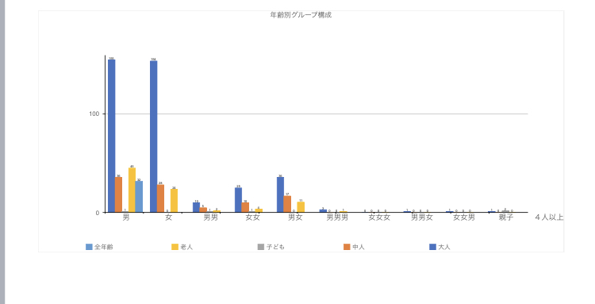

デザイン演習第3・4回
フィールドワーク
MMC周辺を歩いている人々のグループ構成を観察する
ジャンル：住
観察内容：みなとみらいキャンパス周辺を歩く人々のグループ構成
場所：マークイズみなとみらいの通り
確認事項：グループ構成員の人数、年齢、性別、人物像（大人、子供、老人、中人）
年齢・性別・人物像→見た目で判断
観察時間：2021年10月19日 14:30~15:30
観察した感想・データ・考察
観察時間（平日・午後）でみなとみらいにいる人は
・男女ともに１人で来る人が多い
・ペアで来る場合は男女（カップル・夫婦）の場合が多い
・３人以上で来るグループは少ない
・親子も多くてマークイズに行く人や、その前で遊んでいる人が多かった
データ資料
